건축산업기사 (2005-03-06 기출문제)
1과목: 건축계획
1. 상점의 외관을 개방형으로 하였을 경우 가장 적합하지 않은 것은?
- 이발소
- 서적상(서점)
- 제과점
- 지물포
(정답률: 58%)

2. 초등학교 교사의 출입구에 관한 기술 중 적당치 않은 것은 다음 중 어느 것인가?
- 비상구는 중정으로 통하게 배치하는 것이 좋다.
- 강당, 체육관의 출입구는 피난에 적합하여야 한다.
- 교실의 출입구는 일반적으로 두 곳을 둔다.
- 강당의 출입구는 일반인의 이용도 생각해서 배치한다
(정답률: 50%)
3. 다음의 아파트 형식 중 통행부 면적이 작아서 건물의 이용도가 높으며, 프라이버시가 가장 양호한 형태는?
- 편복도형
- 중복도형
- 집중형
- 홀형
(정답률: 알수없음)
4. 학교건축의 음악교실계획에 대한 설명으로 옳지 않은 것은?
- 학습 중 다른 교실에 방해가 되지 않기 위해 방음시설이 필요하다.
- 시청각 교실과 유기적인 연결을 꾀하도록 한다.
- 강당과 연락이 좋은 위치를 택한다.
- 실내는 잔향시간을 없게 하기 위해 흡음재로 마감한다.
(정답률: 알수없음)
5. 주거공간의 평면계획 중 옳지 않은 것은?
- 침식공간을 분리하는 것이 바람직하다.
- 주방 작업과정을 위한 시설로서 냉장고, 작업대, 싱크 작업대, 레인지 작업대 등의 배열순서가 필요하다
- 침실공간은 정적이고 독립성이 있어야 한다.
- 침실의 출입문은 침대가 직접 보이도록 밖여닫이로 하는 것이 좋다.
(정답률: 70%)
6. 초등학교의 부지의 선정시 고려해야 할 사항과 거리가 먼 것은?
- 일조 및 배수가 좋은 곳
- 통학권의 중심에 가까운 곳
- 놀이터 및 공원에 가까운 곳
- 상업 중심지와 가까운 곳
(정답률: 75%)
7. 사무소건축의 엘리베이터 계획에 대한 설명 중 틀린 것은?
- 엘리베이터 대수산정은 이용자가 제일 많은 점심시간 전후의 이용자수를 기준으로 한다.
- 엘리베이터를 직렬로 배치할 경우 4대 정도를 한도로 하는 것이 좋다.
- 엘리베이터의 출발층은 1개소로 한정하는 것이 운영면에서 효율적이다.
- 엘리베이터를 알코브형으로 배치할 경우 엘리베이터의 대향거리는 3.5m‾4.5m 정도로 유지하는 것이 좋다.
(정답률: 알수없음)
8. 7층 규모의 백화점 계획에서 각 층 판매장의 일반적인 배치기준과 가장 관계가 먼 것은?
- 1층에는 선택에 시간이 걸리지 않는 소형상품 등 손쉽게 구매할 수 있는 상품을 진열한다.
- 3층에는 안정된 분위기로 비교적 선택에 시간이 걸리는 상품을 진열한다.
- 5층에는 침구, 카메라, 완구, 운동구 등의 잡화류를 진열하며, 많은 판매장이 구성되도록 한다.
- 7층에는 고객이 백화점에서 최후로 사는 상품을 진열 한다.
(정답률: 54%)
9. 다음 중 상점내 진열장 배치계획에서 가장 우선적으로 고려되어야 할 사항은?
- 동선의 흐름
- 진열장의 치수
- 조명의 밝기
- 천장의 높이
(정답률: 75%)
10. 아파트의 단위주거 단면구성형식 중 메조넷형에 대한 설명으로 옳은 것은?
- 엘리베이터가 매층 정지하여 이용이 편리하다.
- 통로면적의 감소로 전용면적이 증가된다.
- 부지의 이용율은 좋으나 양면개구에 의한 채광, 통풍이 불량하다.
- 소규모 주택에서의 활용이 유리하다.
(정답률: 62%)
11. 다음 노인실 계획에 관한 내용 중 적합하지 않은 것은?
- 식당, 욕실 및 화장실에 가까운 곳이 좋다.
- 일조가 충분하고 전망 좋은 곳에 면하도록 한다.
- 정신적 안정과 보건에 유의해야 한다.
- 노인방은 조용하여야 하므로 가장 은밀한 곳에 배치한다.
(정답률: 알수없음)
12. 고층건물의 코어 내에 들어가는 공간으로 가장 부적당한 것은?
- 계단실
- 덕트
- 공조실
- 배전실
(정답률: 25%)
13. 공장건축의 일반설비사항으로 가장 거리가 먼 것은?
- 조명은 위치를 자유롭게 할 수 있는 인공조명을 주로 사용하는 것이 좋다.
- 환기의 표준으로는 1시간에 6회 내지 7회 정도가 좋으며, 환기방법으로는 자연환기와 기계환기가 있다.
- 강공업(鋼工業)에 속하는 작업장에는 그 자체가 난방이 되어 난방시설이 필요하지 않다.
- 욕실설비는 중층공장의 경우에는 1층에 배치하는 것이 좋다.
(정답률: 10%)
14. 상점건축의 입면구성시 필요로 하는 5가지 광고요소에 해당하지 않는 것은?
- 주의(attention)
- 기억(memory)
- 욕망(desire)
- 경제(economic)
(정답률: 74%)
15. 연립주택의 종류 중 타운 하우스의 특징으로 적당하지 않은 것은?
- 프라이버시 확보는 조경을 통하여서도 가능하다.
- 배치상의 다양성을 줄 수 있다.
- 토지의 효율적인 이용 및 건설비, 유지관리비의 절약을 고려한 연립주택의 형태이다.
- 일반적으로 각 주호마다의 주차가 용이하지 않기 때문에 공동의 주차공간이 필요하다.
(정답률: 55%)
16. 제한된 공간에서 부엌의 각종 설비가 작업하기에 가장 적절하게 배열한 것은?
- 냉장고→레인지→개수대→작업대→배선대
- 냉장고→개수대→작업대→레인지→배선대
- 냉장고→작업대→레인지→개수대→배선대
- 냉장고→레인지→작업대→개수대→배선대
(정답률: 85%)
17. 학교건축에서 교사(校舍)의 배치형식이라고 볼 수 없는 것은?
- 핑거 플랜 (finger plan)
- 폐쇄형
- 집합형
- 앨보 액세스(elbow access)
(정답률: 알수없음)
18. 부엌의 일부에다 간단히 식탁을 꾸민 것을 무엇이라 하는 가?
- Living Kitchen
- Dining Kitchen
- Dining Terrace
- Dining Porch
(정답률: 77%)
19. 공장 건축에서 공장 레이아웃(lay out)에 관한 설명 중 틀린 것은?
- 레이아웃은 장래 공장 규모의 변화에 대응한 융통성이 있어야 한다.
- 제품의 흐름에 따라 기계를 배치하는 방식을 연속작업식 레이아웃이라 한다.
- 기능이 유사한 기계를 집합시키는 방식은 표준화가 어려운 공장에 채용한다.
- 고정식레이아웃은 제품의 대량생산에 적합한 방식이다.
(정답률: 54%)
20. 사무소 계획에 관한 설명 중 가장 부적당한 것은?
- 일반적으로 기준층의 높이는 3.3 - 3.6m 정도가 보통이다.
- 채광면적은 바닥면적의 1/10을 표준으로 한다.
- 3중지역배치는 경제적일 뿐만 아니라 미적 및 구조적인 견지에서도 많은 이점을 제공한다.
- 동일한 층에서 화장실은 분산하여 두도록 한다.
(정답률: 67%)
2과목: 건축시공
21. 철근콘크리트조 건물의 지하실 방수공사에서 시공의 난이, 공사비의 고저를 생각하지 않고 시공하는 경우 가장 바람직한 방법은?
- 아스팔트 바깥 방수법으로 시공한다.
- 콘크리트에 AE제를 넣는다.
- 방수 모르타르를 바른다.
- 콘크리트에 방수제를 넣는다.
(정답률: 73%)
22. 벽돌 벽체에 생기는 백화현상을 방지하기 위한 조치로 옳지 않은 것은?
- 줄눈 모르타르에 석회를 혼합하여 우수의 침입을 방지한다.
- 처마를 충분히 내고 벽에 직접 비가 맞지 않도록 한다.
- 잘 소성된 벽돌을 사용한다.
- 줄눈을 충분히 사춤하고 줄눈 모르타르에 방수제를 넣는다.
(정답률: 41%)
23. 지반내의 모래밀도를 측정하는 방법으로 가장 적합한 것은?
- 전기탐사법
- 베인테스트(Vane test)
- 표준관입시험(Penetration test)
- 딘월샘플링(Thin wall sampling)
(정답률: 47%)
24. 창호 철물의 종류와 용도의 연결이 맞지 않은 것은?
- 자유경첩 - 안팎개폐
- 래버토리힌지 - 중량문짝
- 크리센트 - 오르내리창
- 도어클로우저 - 자동닫이 장치
(정답률: 25%)
25. 조골재를 먼저 투입한 후에 골재와 골재 사이 빈틈에 모르타르를 주입하여 제작하는 방식의 콘크리트는?
- 프리팩트 콘크리트
- 배큠 콘크리트
- 수밀 콘크리트
- AE 콘크리트
(정답률: 59%)
26. 테라죠 현장갈기 시공에 있어 줄눈대를 넣는 목적으로 옳지 않은 것은?
- 바름의 구획목적
- 균열방지 목적
- 보수용이 목적
- 마모감소 목적
(정답률: 37%)
27. 유성페인트의 구성 성분으로 옳지 않은 것은?
- 안료
- 건성유
- 광명단
- 희석제
(정답률: 알수없음)
28. 네트워크 공정표에 관한 설명으로 옳지 않은 것은?
- 개개의 관련작업이 도시되어 있어 내용을 파악하기 쉽다.
- 공정이 원활하게 추진되며, 여유시간 관리가 편리하다.
- 공사의 진척상황이 누구에게나 쉽게 알려지게 된다.
- 다른 공정표에 비해 작성시간이 짧으며, 작성 및 검사에 특별한 기능이 요구되지 않다.
(정답률: 48%)
29. 철골세우기용 기계 중 수평이동이 가능하며, 층수가 낮고 긴 평면일 때 유리한 것은?
- 가이데릭
- 타워크레인
- 스티프레그데릭
- 진폴
(정답률: 28%)
30. 콘크리트 이어붓기 방법에 대한 기술 중 옳지 않은 것은?
- 기둥은 보, 바닥판 또는 기초판위에서 수평으로 한다.
- 캔틸레버로 내민 보나 바닥판은 중앙부에서 수직으로 한다.
- 보나 슬래브는 전단력이 가장 작은 스팬의 1/2부근에서 수직으로 한다.
- 아치(arch)의 이음은 아치축에 직각으로 한다.
(정답률: 19%)
31. 다음 철골공사의 공장가공 작업 중 구멍뚫기 이전에 행하여야 할 작업은?
- 절단
- 가조립
- 리벳치기
- 검사
(정답률: 37%)
32. 10.8cm 각 타일을 줄눈 가로, 세로 6mm로 붙일 때 1m2당 타일 매수로 옳은 것은?
- 72매
- 73매
- 75매
- 77매
(정답률: 알수없음)
33. 다음 유리의 종류 중 주로 방화 및 방재용으로 사용되는 유리는?
- 망입유리
- 보통판유리
- 강화유리
- 페어유리
(정답률: 60%)
34. ALC(Autoclaved Lightweight Concrete)의 물리적 성질 중 틀린 것은?
- 기건비중은 보통콘크리트의 약 1/4정도이다.
- 열전도율은 보통콘크리트와 유사하나 단열성은 우수하다.
- 불연재인 동시에 내화재료이다.
- 경량이어서 인력에 의한 취급이 용이하다.
(정답률: 48%)
35. 관리 사이클의 단계를 바르게 나열한 것은?
- Plan - Check - Do - Action
- Plan - Do - Check - Action
- Plan - Do - Action - Check
- Plan - Action - Do - Check
(정답률: 알수없음)
36. 흙막이 널말뚝 주변의 흙은 경사면으로 남겨 자립할 수 있도록 하고 중앙부의 흙을 먼저 판 후 지하 구조체를 축조하여 이곳을 지점으로 하여 흙막이 버팀대를 경사지게 또는 수평으로 가설한 후에 널말뚝 주변 경사면의 흙을 파내는 공법을 무엇이라 하는가?
- Earth anchor method
- Trench cut method
- Island method
- Tie-load method
(정답률: 48%)
37. 타일 붙이기 공법중 거푸집면 타일먼저붙이기 공법의 종류로서 옳지 않은 것은?
- 타일시트법
- 줄눈대법
- 유니트 타일 붙이기법
- 줄눈틀법
(정답률: 20%)
38. 공개경쟁 입찰인 경우 입찰조건을 설명 할 때 설명할 필요가 없는 것은 어느 것인가?
- 공사기간
- 공사비 지불조건
- 자재의 수량 및 공사금액
- 도급자 결정방법
(정답률: 10%)
39. 철근콘크리트 보로서 폭 30cm, 춤 60cm, 길이 6m 짜리 10개의 중량은?
- 12,592 kg
- 15,184 kg
- 21,600 kg
- 25,920 kg
(정답률: 13%)
40. 콘크리트 보양 거푸집을 빨리 제거하고 단시일에 소요강도를 내기위한 보양 방법은?
- 습윤보양
- 전기보양
- 피막보양
- 증기보양
(정답률: 79%)
3과목: 건축구조
41. 그림과 같은 도형의 도심의 위치 Xo의 값으로 맞는 것은?
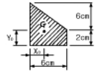
- 2.4㎝
- 2.5㎝
- 2.6㎝
- 2.7㎝
(정답률: 알수없음)
42. 그림과 같은 도형의 x축에 대한 단면 1차모멘트의 값으로 맞는 것은?
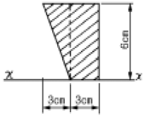
- 54㎝3
- 72㎝3
- 90㎝3
- 108㎝3
(정답률: 7%)
43. 표준형벽돌을 사용한 1.5B 쌓기의 벽두께 치수로서 옳은 것은? (단, 2중벽이 아님)
- 260㎜
- 290㎜
- 320㎜
- 360㎜
(정답률: 50%)
44. P = 15tf, M = 1.125tf·m를 받는 원형기둥에 인장응력이 생기지 않는 최소 기둥지름은?
- 60㎝
- 50㎝
- 40㎝
- 30㎝
(정답률: 10%)
45. 블럭조에서 테두리보를 설치하는 이유로 옳지 않는 것은?
- 횡력에 대한 수직균열을 방지하기 위하여
- 내력벽을 일체로하여 하중을 균등히 분포시키기 위하여
- 지붕, 바닥 및 벽체의 하중을 내력벽에 전달하기 위하여
- 가로 철근의 끝을 정착시키기 위하여
(정답률: 59%)
46. 균일한 단면을 가진 부재에 인장응력도가 100㎏f/㎝2이 일어나도록 인장력을 가했을 때 부재의 길이가 0.1㎝ 늘어났다면 이때 이 부재의 원래의 길이로서 맞는 것은 ? (단, 영계수 E = 9 x 105㎏f/㎝2)
- 5m
- 7.5m
- 9m
- 10.5m
(정답률: 25%)
47. 다음 중 천장부분에 층단으로 만들어 장식과 음향효과를 갖도록 하며, 간접조명도 설치할 수 있는 반자는?
- 살대반자
- 종이반자
- 건축판반자
- 구성반자
(정답률: 42%)
48. 철골조 기둥의 주각부분에 사용되는 것이 아닌 것은?
- 사이드앵글(side angle)
- 윙 플레이트(wing plate)
- 베이스 플레이트(base plate)
- 플랜지 플레이트(flange plate)
(정답률: 32%)
49. 단면 45 x 60㎝의 철근 콘크리트 보에 전단보강근 D10(a1= 0.71㎝2)을 사용할 때 늑근의 최소 철근비 0.15%가 유지 되기 위한 늑근간격은?
- 20㎝
- 25㎝
- 30㎝
- 35㎝
(정답률: 16%)
50. 그림과 같은 구조물의 C점에 20㎏f의 수평력이 작용할때 S부재에 생기는 응력의 값으로 맞는 것은?
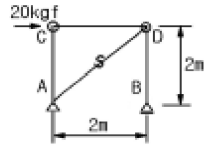
- 10kgf
- 10㎼2kgf
- 20kgf
- 20㎼2kgf
(정답률: 27%)
51. 다음 중 지붕의 물매를 결정짓는 요소와 가장 관계가 먼 것은?
- 지붕면의 크기
- 지붕재료의 성질, 크기, 모양
- 풍우량, 적설량
- 지붕틀의 종류
(정답률: 50%)
52. 그림과 같은 줄기초를 구축하려고 한다. 여기서 기초의 최소 나비 b는 약 얼마인가?
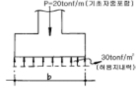
- 57㎝
- 67㎝
- 77㎝
- 87㎝
(정답률: 0%)
53. 강도설계법에서 철근콘크리트 기둥의 단면적에 대한 최소 철근비는?
- 1%
- 2%
- 3%
- 4%
(정답률: 10%)
54. 건축물의 구조계획에서 구조체 자중의 감소에 따른 이점이 아닌 것은?
- 풍하중에 대한 건물의 전도 방지
- 기둥축력의 감소에 따른 기둥의 단면 감소
- 휨재 설계시 장스팬이 가능
- 경제적인 기초설계
(정답률: 42%)
55. 강도설계법에서 철근콘크리트보의 평형철근비 산정시 콘크리트 압축변형률은 얼마로 가정하는가?
- 0.0018
- 0.002
- 0.003
- 0.004
(정답률: 55%)
56. 강도설계법에 의한 철근콘크리트 설계시 단근직사각형 보에서 균형단면을 이루기 위한 중립축의 위치 cb가 30cm 인 경우 등가응력블록의 깊이 ab는? (단, fck = 27MPa이다.)
- 180 mm
- 210 mm
- 225 mm
- 255 mm
(정답률: 10%)
57. 외부벽의 방습, 방열, 방음 등을 위해서 설치하는 조적쌓기는?
- 내쌓기
- 영롱쌓기
- 공간쌓기
- 엇모쌓기
(정답률: 37%)
58. 철근콘크리트조에 관해 바르게 설명한 것은?
- 보의 주근의 이음은 보의 임의의 곳을 택한다.
- 철근을 피복하는 목적은 철근의 방청과 내화에 필요하다.
- 띠철근은 보의 전단력 보강을 위해 사용된다.
- 기둥의 단면적은 최소 40,000mm2 이상으로 한다.
(정답률: 30%)
59. 극한하중상태의 휨저항모멘트 계산시 등가응력블럭으로 가정된 압축응력의 합력 C의 크기는? (단, 콘크리트 강도= fck, 등가응력블록의 높이 = a , 보의 폭= b)
- 0.8fck ×a×b
- 0.85fck×a×b
- 0.7fck×a×b
- 0.75fck×a×b
(정답률: 42%)
60. 그림과 같은 단순보에 생기는 최대 휨응력도의 값으로 맞는 것은? (단, 보의 폭 x 높이 = 6㎝ x 12㎝임)
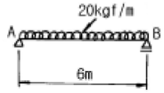
- 62.5㎏f/㎝2
- 78㎏f/㎝2
- 86.5㎏f/㎝2
- 96㎏f/㎝2
(정답률: 29%)
4과목: 건축설비
61. 난방부하 계산시 각 외벽을 통한 손실열량은 방위에 따른 방향계수에 의해 값을 보정하는데, 계수의 값이 큰 것부터 차례로 된 것은?
- 북 ＞ 동,서 ＞ 남
- 북 ＞ 남 ＞ 동,서
- 동 ＞ 남,북 ＞ 서
- 남 ＞ 북 ＞ 동,서
(정답률: 62%)
62. 소방시설의 종류가 아닌 것은?
- 스프링클러설비
- 드렌처설비
- 폭기설비
- 연결살수설비
(정답률: 53%)
63. 전양정이 40m인 펌프가 있다. 전동기의 회전수를 100회에서 50회로 감소했을 때 전양정은 얼마가 되는가?
- 10m
- 20m
- 40m
- 80m
(정답률: 27%)
64. 2중덕트 방식에 대한 설명 중 틀린 것은?
- 부하특성이 다른 다수의 실이나 존에도 적용할 수 있다
- 덕트 스페이스가 작으며 습도의 완벽한 조절이 가능하다.
- 혼합상자에서 소음과 진동이 생긴다.
- 냉ㆍ온풍의 혼합으로 인한 혼합손실이 있어서 에너지 소비량이 많다.
(정답률: 47%)
65. 탱크로의 급수압력에 관계없이 대변기로의 공급수량이나 압력이 일정하며, 양호한 세정효과와 소음이 적어 일반 주택에서 주로 사용되는 대변기의 세정방식은?
- 하이 탱크식
- 기압 탱크식
- 로우 탱크식
- 세정 밸브식
(정답률: 67%)
66. 피뢰침 설비에 관한 다음 설명 중에서 옳은 것은?
- 피뢰설비는 능력면에서 완전보호, 증강보호, 보통보호, 간이보호로 나눌 수 있다.
- 일반 건축물의 돌침 및 수평도체의 보호각은 80°이다.
- 위험물을 저장·제조 취급하는 건축물의 보호각은 60°이다.
- 지반면상 10m 이상의 건축물에는 반드시 피뢰침을 설치하도록 되어 있다.
(정답률: 알수없음)
67. 급수방식 중 고가수조방식에 대한 설명으로 옳지 않은 것은?
- 수압과다에 따른 밸브류 및 배관부속품의 파손이 적다.
- 단수가 잦거나 안정적인 물 공급이 우선시 되는 곳에 많이 이용되어진다.
- 수조의 오염성이 낮으며 탱크를 기밀하게 제작하여야 하므로 초기투자비가 높다.
- 항상 일정하고 안정된 수압을 유지할 수 있다.
(정답률: 55%)
68. 다음 중 분전반에 대한 설명으로 옳지 않은 것은?
- 분전반은 주개폐기, 분기개폐기 및 자동차단기를 모아서 설치한 것이다.
- 분기회로용 개폐기는 나이프 스위치나 노퓨즈 브레이커 등이 사용된다.
- 1개의 분전반에 넣을수 있는 분기 개폐기의 수는 예비 회로를 포함하여 40회로 이하로 한다.
- 일반적으로 1층에 분전반은 1개씩 설치하고 분기회로의 길이는 50m 이상이 되도록 정하는 것이 좋다.
(정답률: 알수없음)
69. 배선 공사 방법 중 금속관 공사에 대한 설명으로 옳지 않은 것은?
- 철근 콘크리트조의 매입공사에는 사용할 수 없다.
- 습기가 많은 장소에 시설하는 경우에는 방습장치를 하도록 한다.
- 전선의 과열에도 화재의 우려가 적다.
- 기계적 외력에 대해 전선이 보호 된다.
(정답률: 47%)
70. 다음 중에서 난방설비와 관계가 없는 것은?
- 방열기(Radiator)
- 보일러(Boiler)
- 팽창 탱크(Expansion tank)
- 냉각 탑(Cooling tower)
(정답률: 19%)
71. 증기보일러 주변 배관방식에서 하트포드 접속방식을 채택 하는 이유는?
- 보일러내의 수위를 안전하게 확보하기 위하여
- 보일러의 열효율을 향상시키기 위하여
- 보일러내의 스케일 발생을 줄이기 위하여
- 소음을 줄이기 위하여
(정답률: 알수없음)
72. 다음 중 BOD제거율[%]을 나타낸 식으로 올바른 것은?
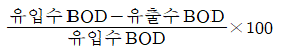
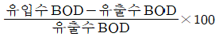
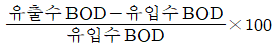
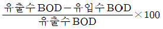
(정답률: 55%)
73. 광도의 단위로 맞는 것은?
- lm
- cd
- Lux
- cd/m2
(정답률: 34%)
74. 옥내 소화전이 2, 3층에 각각 2개씩 설치되어 있고, 1층에 3개 설치되어 있다. 이 건물의 소화용 수원의 최소 저수량은?
- 7.8 m3
- 3.9 m3
- 5.4 m3
- 9.6 m3
(정답률: 42%)
75. 통기관의 설치목적과 가장 관계가 먼 것은?
- 배수의 흐름을 원활히 한다.
- 배수관 내의 환기를 도모한다.
- 배수관 내의 기압변동을 억제한다.
- 모세관 현상에 의한 파봉현상을 방지한다.
(정답률: 53%)
76. 온수난방에서 방열기의 상당 방열면적(EDR)의 공식은? (단, qr은 방열기의 전발열량(kcal/h)이다.)
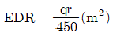
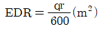
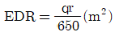
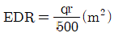
(정답률: 24%)
77. 바닥이나 벽을 관통하는 배관의 경우 슬리브(sleeve)를 설치하는 이유는?
- 수격작용을 방지하기 위하여
- 관의 부식을 방지하기 위하여
- 관의 신축에 무리가 생기지 않도록 하기 위하여
- 방동, 방로를 위하여
(정답률: 15%)
78. 조명설계의 순서로서 옳은 것은?
- 조명기구의 선정 - 소요조도의 결정 - 조명방식의 선정 - 광원의 선정 - 광원의 배치
- 조명방식의 선정 - 조명기구의 선정 - 소요조도의 결정 - 광원의 배치 - 광원의 선정
- 소요조도의 결정 - 조명방식의 선정 - 광원의 선정 - 조명기구의 선정 - 광원의 배치
- 광원의 배치 - 광원의 선정 - 소요조도의 결정 - 조명기구의 선정 - 조명방식의 선정
(정답률: 77%)
79. 인터폰설비에서 1대의 모기에 임의 대수의 자기를 접속한 것으로 모기에서는 어느 자기나 호출 통화할 수 있으나 자기 상호간은 모기의 중계에 의해서 통화가 가능한 방식은?
- 모자식
- 상호식
- 복합식
- 병용식
(정답률: 알수없음)
80. 유체의 흐름에 의한 마찰손실이 적으므로 물과 증기배관에 주로 이용되고 게이트밸브라고도 불리우는 것은?
- 체크밸브
- 앵글밸브
- 글로브밸브
- 슬루스밸브
(정답률: 10%)
5과목: 건축관계법규
81. 다음 용도 분류 중 교육연구 및 복지시설에 속하지 않는 것은?
- 청소년수련관
- 직업훈련소
- 유스호스텔
- 자동차운전학원
(정답률: 32%)
82. 부설주차장에서 주차단위구획과 접하여 있는 차로의 너비가 큰 것부터 나열한 주차형식은?
- 직각주차→평행주차→45도 대향주차
- 직각주차→45도 대향주차→평행주차
- 직각주차→교차주차→60도 대향주차
- 교차주차→60도 대향주차→평행주차
(정답률: 알수없음)
83. 다음 중 부설주차장의 주차대수 1대당 시설면적이 최소인 시설물은?
- 위락시설
- 판매 및 영업시설
- 숙박시설
- 공공용시설중 방송국
(정답률: 17%)
84. 부설주차장의 총주차대수 규모가 8대 이하인 자주식 주차장(지평식)의 구조 및 설비기준으로 옳지 않은 것은?
- 차로의 너비는 2.5m 이상으로 한다.
- 주차대수가 5대 이하인 주차단위구획은 차로를 기준으로 하여 세로로 2대까지 접하여 배치할 수 있다.
- 출입구의 너비는 3.5m 이상으로 한다.
- 보행인의 통행로가 필요한 경우에는 시설물과 주차단위구획 사이에 0.5m 이상의 거리를 두어야 한다.
(정답률: 25%)
85. 부설주차장의 인근설치에 관한 설명 중 옳지 않은 것은?
- 원칙적으로 시설물의 부지인근에 단독으로 설치할 수 있는 주차대수는 300대 이하이다.
- 원칙적으로 시설물의 부지인근에 공동으로 설치할 수 있는 주차대수는 600대 이하이다.
- 당해 부지의 경계선으로부터 부설주차장의 경계선까지의 직선거리는 300미터 이내이다.
- 당해 부지의 경계선으로부터 부설주차장의 경계선까지의 도보거리는 600미터 이내이다.
(정답률: 67%)
86. 건축법상 거실의 방습기준을 적용하여 바닥부분에 방습 조치를 하지 않아도 되는 대상건축물은?
- 일반목욕장의 욕실
- 숙박시설의 화장실
- 휴게음식점의 조리장
- 일반음식점의 조리장
(정답률: 53%)
87. 인근 건축물과의 연결복도 또는 연결통로를 설치하는 경우 그 기준으로 옳지 않은 것은?
- 주요구조부가 방화구조일 것
- 마감재료가 불연재료일 것
- 밀폐된 구조인 경우 바닥면적의 1/10 이상에 해당하는 면적의 창문을 설치할 것
- 너비 및 높이가 각각 5m 이하일 것
(정답률: 9%)
88. 주차대수 1대에 대한 주차장의 주차구획면적을 가장 넓게 하여야 하는 것은?
- 직각주차
- 지체장애인의 전용주차장
- 평행주차
- 주거지역의 보도와 차도의 구분이 없는 도로상의 직각주차
(정답률: 알수없음)
89. 각 층별 바닥면적이 4,000m2이고 그 중 거실면적이 3,000m2인 12층의 호텔건축물에 필요한 승용승강기는 24인승을 기준으로 최소 몇 대인가?
- 3대
- 4대
- 5대
- 6대
(정답률: 47%)
90. 지하층의 구조에 대한 내용으로 옳지 않은 것은?
- 바닥면적이 50제곱미터이상인 층에는 직통계단외에 피난층으로 통하는 비상탈출구 및 환기통을 설치할 것
- 바닥면적이 1천제곱미터이상인 층에는 피난층 또는 지상으로 통하는 직통계단을 방화구획으로 구획되는 각 부분마다 1개소 이상 설치할 것
- 거실의 바닥면적의 합계가 800제곱미터 이상인 층에는 환기설비를 설치할 것
- 지하층의 바닥면적이 300제곱미터 이상인 층에는 식수 공급을 위한 급수전을 1개소 이상 설치할 것
(정답률: 20%)
91. 10가구에 필요한 음용수용 급수관의 최소관경은 몇mm인가?
- 20 mm
- 25 mm
- 30 mm
- 40 mm
(정답률: 19%)
92. 막다른 도로의 길이가 32m일 경우 최소한의 도로의 너비는 얼마인가?
- 2m
- 3m
- 4m
- 6m
(정답률: 10%)
93. 일반주거지역 안에서 건축물을 건축하는 경우 일조 등의 확보를 위한 건축물의 높이 제한에 관한 것이다. 건축물의 각 부분을 정북방향으로의 인접대지경계선으로부터 띄어야 할 거리로서 옳지 않은 것은?
- 높이 3m의 부분 : 1m 이상
- 높이 6m의 부분 : 2m 이상
- 높이 8m의 부분 : 3m 이상
- 높이 9m의 부분 : 4.5m 이상
(정답률: 17%)
94. 연면적의 합계가 몇 제곱미터 이상인 문화 및 집회시설의 대지에는 공개공지 또는 공개공간을 확보하여야 하는가?
- 1,500m2 이상
- 3,000m2 이상
- 5,000m2 이상
- 10,000m2 이상
(정답률: 알수없음)
95. 건축물 내부에 설치하는 피난계단의 구조로서 적당하지 않은 것은?
- 건축물의 내부와 접하는 계단실의 창문등은 망이 들어있는 유리의 붙박이창으로 할 것
- 계단실의 실내에 접하는 부분의 마감은 불연재료 또는 준불연재료로 할 것
- 계단은 내화구조로 하고 피난층 또는 지상까지 직접 연결되도록 할 것
- 계단실의 바깥쪽과 접하는 창문등은 당해 건축물의 다른 부분에 설치하는 창문등으로부터 2m 이상의 거리를 두고 설치할 것
(정답률: 17%)
96. 철골조로 할 경우 피복두께에 관계없이 내화구조로 인정받을 수 있는 것은?
- 기둥
- 내력벽
- 비내력벽
- 계단
(정답률: 46%)
97. 건축법상 아파트의 경우 에너지 절약계획서를 제출하여야 하는 세대수는 몇 세대 이상인가?
- 30세대
- 50세대
- 100세대
- 300세대
(정답률: 알수없음)
98. 대형기계식주차장에 있어서 출입구 전면에 확보하여야 할 전면공지의 크기(너비 ×길이)는 얼마인가?
- 8.1m ×9.5m 이상
- 8.7m ×9.8m 이상
- 10.0m ×11.0m 이상
- 10.3m ×11.0m 이상
(정답률: 20%)
99. 노상주차장의 설비기준으로 옳지 않은 것은?
- 주차대수규모가 20대 이상인 경우에는 장애인전용주차구획을 1면 이상 설치하여야 한다.
- 종단구배가 3%를 초과하는 도로에 설치하여서는 아니된다.
- 주간선도로에 설치하여서는 아니된다.
- 고속도로, 자동차전용 도로 또는 고가도로에 설치하여서는 아니된다.
(정답률: 50%)
100. 건축허가 대상물 건축물을 철거하고자 하는 자는 철거예정일 며칠 전까지 철거·멸실 신고서를 시장·군수·구청장에게 제출해야 하는가?(관련 규정 개정전 문제로 여기서는 기존 정답인 2번을 누르면 정답 처리됩니다. 자세한 내용은 해설을 참고하세요.)
- 3일 전
- 7일 전
- 15일 전
- 30일 전
(정답률: 44%)